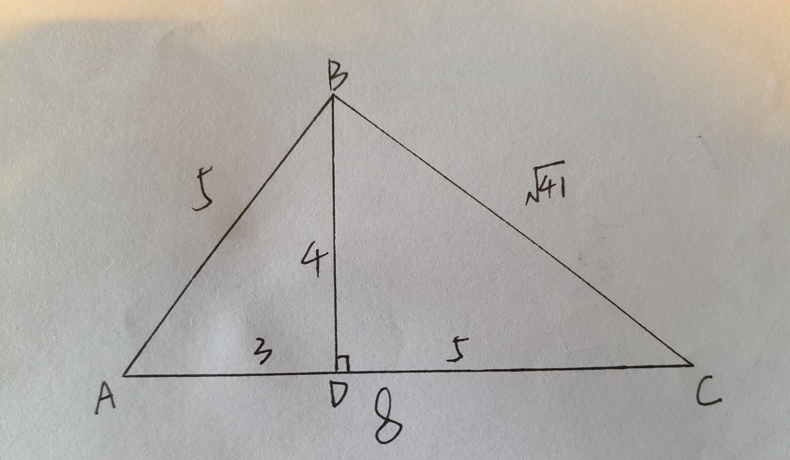

css 三角形实现代码及其原理
直接简单粗暴先上代码
把div的高度、宽度设为0，设一个border
.triangle-1{
width:0; // 下面的没有写这个是因为我加上了display:inline-block;
height:0;
border:20px solide black;
}
效果如图：
是否感觉一头雾水？再来看一个例子,把高度、宽度设置回来，border设置大于高度
.triangle-2{
width:10px;
height: 10px;
border-top:20px solid black;
border-bottom:20px solid black;
border-left:20px solid pink;
border-right: 20px solid pink;
}
效果如图：
是不是有些明白了呢，再把高度、宽度去掉，我们会发现...
.triangle-3{
border-top:20px solid black;
border-bottom:20px solid black;
border-left:20px solid pink;
border-right: 20px solid pink;
}
效果如图：
oh，三角形出现了,但是太多了，那好，我们把其余三个的border的颜色变成透明。很好，就有我们想要的效果了
.triangle-4{
border-top:20px solid black;
border-bottom: 20px solid transparent;
border-left:20px solid transparent;
border-right: 20px solid transparent;
}
效果如图：
但是，打开控制台来看下，我们会发现上面那个图形占40*40,而我们的三角形只需要40*20就够了，所以我们并不需要border-bottom
.triangle-5{
border-top:20px solid black;
border-left:20px solid transparent;
border-right: 20px solid transparent;
}
效果如图：
好像又发现了一些神奇的东西，既然可以去掉一个border-bottom,那我再测试一下再去一个
.triangle-6{
border-top:20px solid black;
border-left:20px solid transparent;
}
效果如图：
三角形竟然刚好被平分了，用控制台发现上面图形变成了20*20了，然后我们就可以实现下面这几种类似的三角形了
.triangle-7{
border-bottom:20px solid red;
border-right:20px solid transparent;
}
效果如图：
我们还可以通过不同的代码实现和上面一样的效果，其中的原因大家一想就能明白
.triangle-8{
border-top:20px solid transparent;
border-left:20px solid red;
}
效果如图：
上面的三角形都是等腰直角三角形，太没有意思了，我们来研究特别一些的
.triangle-9{
border-top:20px solid red;
border-left:40px solid transparent;
}
效果如图：
上图中在控制台显示是40*20，至此，我们能终结出一下规律：
一、上图中有颜色的方向是top,则图形的高度为top的20，方向是top的相反方向bottom
二、上图中透明的方向是left，则图形的高度为left的40，方向不变是left方向
我们再把另一边bottom-right加上看看什么情况
一、上图中有颜色的方向是top,则图形的高度为top的20，方向是top的相反方向bottom
二、上图中透明的方向是left，则图形的高度为left的40，方向不变是left方向
我们再把另一边bottom-right加上看看什么情况
.triangle-10{
border-top:20px solid red;
border-left:40px solid transparent;
border-right:40px solid transparent;
}
效果如图：
发现变成了80*20的图形，这样我们就画了一个等腰三角形了，我们再搞事情，把颜色和大小都改变一下看看
.triangle-11{
border-top:20px solid red;
border-left:30px solid pink;
border-right:40px solid black;
}
效果如图：
那好，看上图，我们又要总结规律了：
一、上图图形为70*20，其中20是border-top,而border-left+border-right刚好为70
二、红色三角形向下的顶点离左边是border-left,离右边的距离是border-right;
一、上图图形为70*20，其中20是border-top,而border-left+border-right刚好为70
二、红色三角形向下的顶点离左边是border-left,离右边的距离是border-right;
总结了规律，那么我们开始实践运用了，请看下图是怎样实现的？

一、已知三边的长度，我们以AC为边做高BD，然后用余弦定理解出cos A 的值，那么解出AD为3，BD为4，CD为5
二、首先三角形向上，高度为40，所以是border-bottom:40px solid red;
三、左边AD为3，所以border-left:30px solid transparent;
四、右边CD为5，所以border-right:50px solid transparent;
二、首先三角形向上，高度为40，所以是border-bottom:40px solid red;
三、左边AD为3，所以border-left:30px solid transparent;
四、右边CD为5，所以border-right:50px solid transparent;
.triangle-12{
border-bottom: 40px solid red;
border-left: 30px solid transparent;
border-right: 50px solid transparent;
}
效果如图：